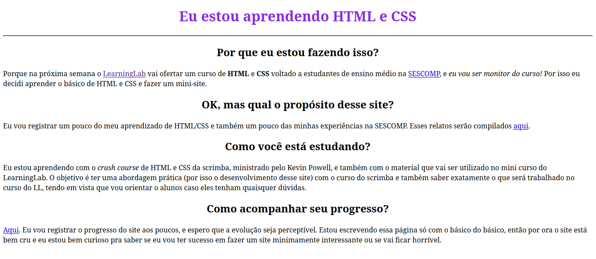
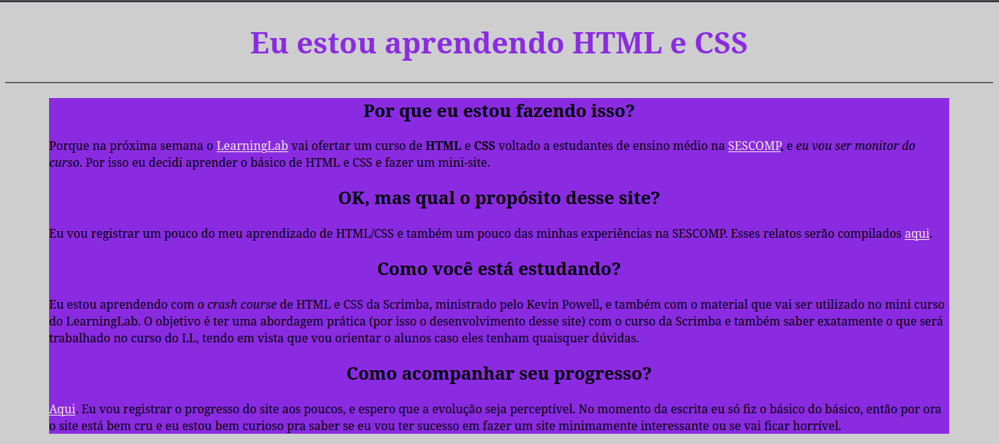
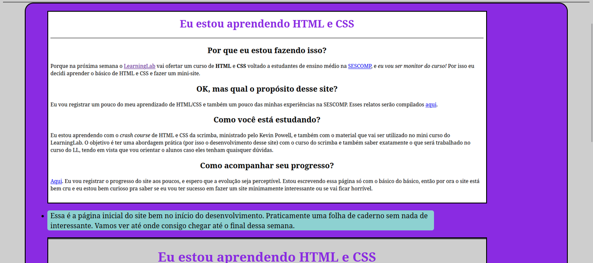

-

Essa é a página inicial do site bem no início do desenvolvimento. Praticamente uma folha de caderno sem nada de interessante. Vamos ver até onde consigo chegar até o final dessa semana.
-

Aprendi algumas manipulações como o margin, e comecei a estilizar a página com um documento CSS separado em vez de usar inline. Também comecei a organizar as coisas por classe de modo a facilitar as mudanças. Ainda não sei se gostei da cor que eu escolhi pra caixa central.
-

Agora criei algumas caixas para conter os comentarios dessa página e adicionei bordas no layout. Agora vou começar a trabalhar nas páginas dos resumos e relatos, que eu acredito que vai ser a seção mais trabalhosa do site e que talvez fique um pouco mais legal, talvez parecida com o formato de um blog oldschool ou coisa do tipo.